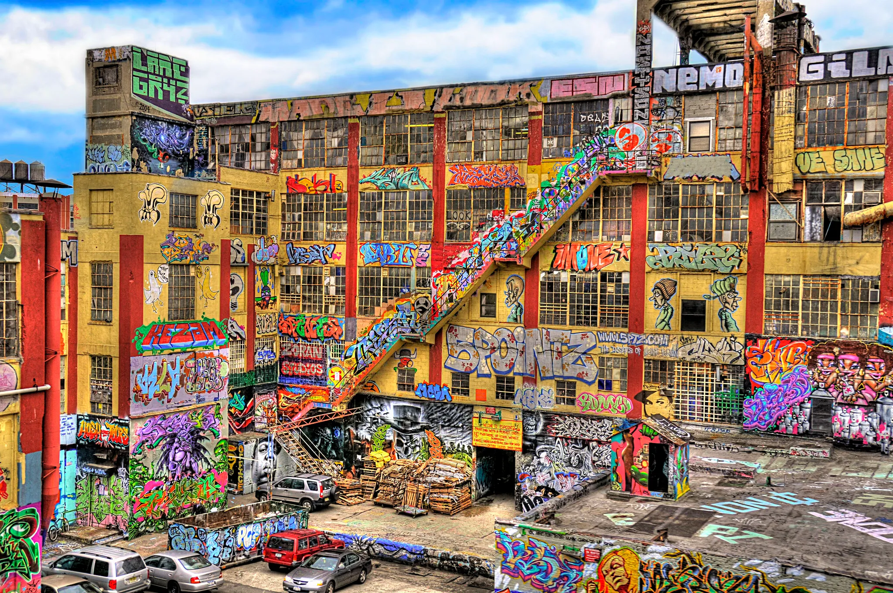
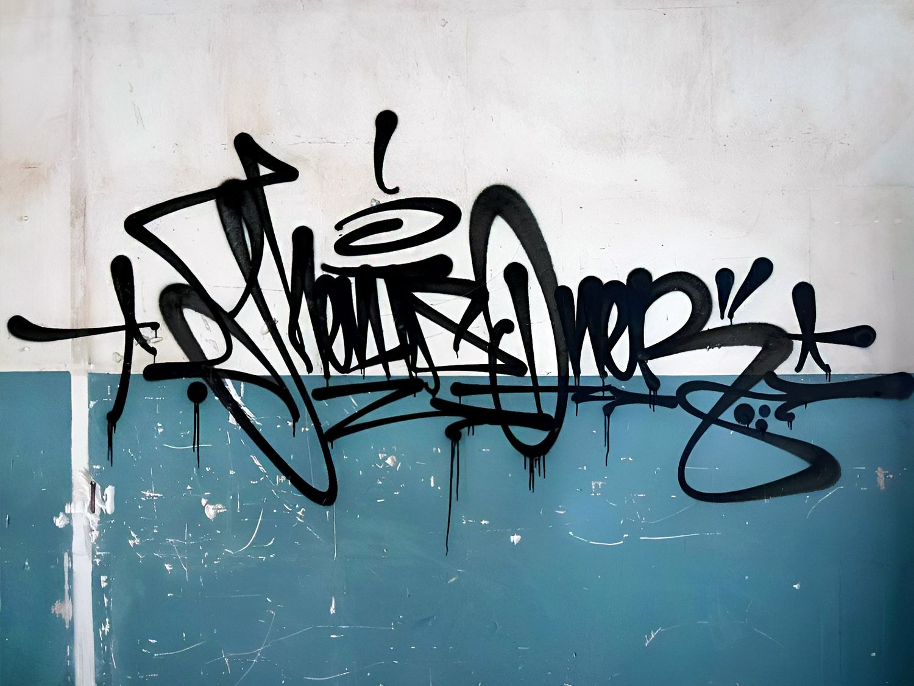
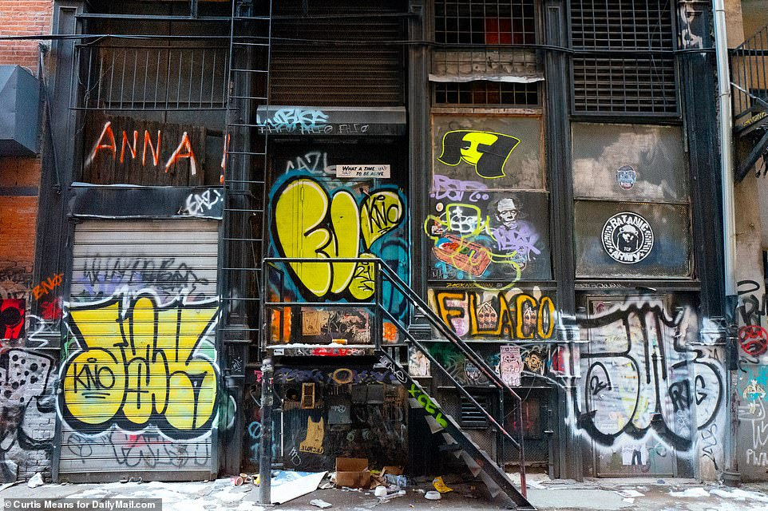
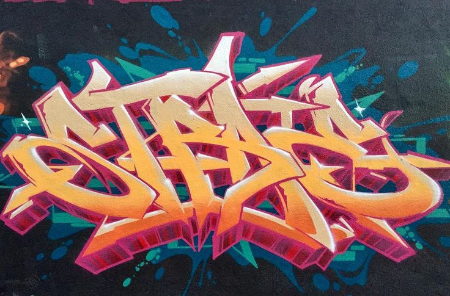

YOU OWN THE STREETS
Graffiti Styles
by Tats Crew - July 4th, 2025
Developing a classification of graffiti styles may seem a daunting task. Graffiti developed over several decades but this relatively short time span when compared to other art forms does not seem to affect the richness of their stylistic expressions. History of graffiti goes back to Roman times, but these first graffiti scribbled on Roman houses were not created with any aesthetic idea behind them so they can’t be described as one of the graffiti styles. In the 20th century graffiti are considered an urban art form, but not by everyone. From the first widespread appearance in New York subway to buildings and walls around the city, graffiti had a bad reputation that often provoked negative actions by the officials. Some of the early graffiti masters were even incarcerated and persecuted for their work, which was pronounced as vandalism by political elites.
Tags
A tag can be defined as a stylised signature of the graffiti artist’s name, often done quickly on a public surface.Tags are the most common style of graffiti and often the starting point for new graffiti artists. Tags can be found in every graffiti culture worldwide because they’re the earliest method of modern-day graffiti – with graffiti writers like Cornbread from Philadelphia being the first to do a graffiti tag in 1965.
Throw Ups
Throw-ups are a style of graffiti characterised by rounded bubble letters with minimal negative space painted quickly (or ‘thrown-up’) on a surface.The throw-up is usually the next progression from a tag. This comes as graffiti artists get more familiar with letter structures and strive for their names to be painted bigger, whilst also maintaining speed. By avoiding negative space, sharp edges and intricate details, throw-ups are able to be painted quickly. Throw-ups contain two colours of paint – one for the fill and one for the outline.
Wild Style
Among the different styles displayed in large format, one of the most iconic is undoubtedly the "Wildstyle" which emerged in the 1970s-1980s in New York and has become increasingly complex over time in Europe. Here, tapering letters intertwine with each other, and numerous graphic elements are incorporated into the composition according to the effect desired by the graffiti artist, such as arrows, points, serifs, and shadow effects. As a result, this compact composition becomes almost unreadable, and it is very difficult to identify the letters that make it up. This wild style is therefore complicated to read for the uninitiated due to its numerous depth and thickness effects, but it should not be confused with the 3D style that emerged in the 1990s. Among the most representative artists of this bold and spectacular style are primarily the artist Tracy 168, who is considered its initiator, and Phase 2, but also more contemporary international artists such as Bates, Chips, Taste, Mist, Cren and Zurik.